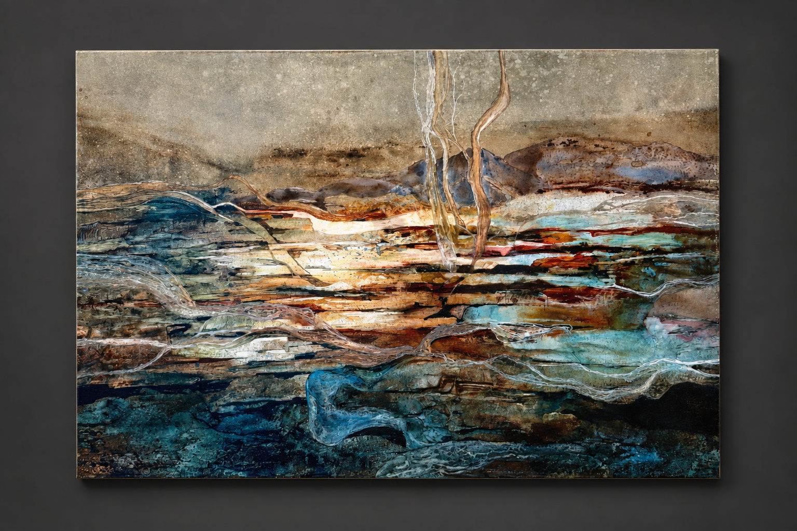

Earth & Wind
Watercolor on Yupo
24" × 36"
$3,600
AMBLESIDE ARTIST
Watercolor · Drawing · Design
FEATURED WORK

Eldon Faries
THE ARTIST
Eldon D. Faries was born in Woodward, Oklahoma in 1940 and spent much of his early life moving throughout the country with his family.
After settling in Texas, he attended Schreiner Institute and later the University of Texas, where he earned both a bachelor's and master's degree.
His early interests included theater, music and design, but visual art became the central thread of his professional life.
Over the course of his career, Faries worked as both an artist and educator, bringing drawing, painting, design and craftsmanship into the classroom and studio.
THE PRACTICE
Art as a lifelong act of observation, making and teaching.
WATERCOLOR
While teaching in Bloomington, Indiana, Faries became increasingly interested in watercolor painting.
That interest developed into a sustained practice that continued throughout his teaching career and beyond.
His involvement with the Watercolor Art Society of Houston brought recognition, exhibition opportunities and awards.
He also taught adult watercolor classes and workshops, extending his role as an educator beyond the high school classroom.
EDUCATOR
Faries began teaching in Bloomington, Indiana before moving to Spring, Texas in 1979.
At Klein High School, he taught drawing, painting, design and jewelry for 24 years.
His influence extended across generations of students, and he was remembered for the generosity and commitment he brought to both teaching and art-making.
THEATER & DESIGN
Faries' interest in theater remained part of his creative life throughout his career.
He designed sets for schools and local theater productions while living in Indiana.
Later, in Texas, he contributed set design to annual Passion plays at Champion Forest Baptist Church.
That experience reflected the same broad visual sensibility present in his work across painting, drawing and design.
SELECTED WORKS
Watercolor on Yupo
24" × 36"
$3,600
Watercolor on Yupo
36" × 24"
$3,000
EDUCATION & CAREER
Studied in Kerrville, Texas, developing interests in art, theater and music.
Bachelor's degree and master's degree.
Taught at University School and Bloomington North High School.
Continued doctoral study while developing his watercolor practice.
Moved to Spring, Texas.
Taught drawing, painting, design and jewelry for 24 years.
WATERCOLOR COMMUNITY
Active member and recipient of multiple awards.
Paintings exhibited in shows and galleries throughout the nation.
Taught adult watercolor classes and workshops.
COLLECT